ভিন্ন হরযুক্ত ভগ্নাংশের যোগ ও বিয়োগ
উৎস-অনুগত উপবিভাগ · m81289-fs-id1276143। সম্পূর্ণ বইয়ের অনুবাদ এখনও চলছে। গাণিতিক চিহ্ন, সংখ্যা ও মূল কাঠামো অক্ষুণ্ণ; প্রযোজ্য ক্ষেত্রে সূত্রের শব্দলেবেল বাংলায় অনূদিত। মূল ছবির ভিতরের ইংরেজি লেবেলের অর্থ বাংলা বিবরণে আছে। স্বাধীন শিক্ষক ও ভাষা-পর্যালোচনা বাকি। অন্য উপবিভাগের উৎস-লিঙ্কে ইন্টারনেট প্রয়োজন।
ভিন্ন হরযুক্ত ভগ্নাংশের যোগ ও বিয়োগ
দুটি ভগ্নাংশকে একই হরযুক্ত সমতুল ভগ্নাংশে রূপান্তর করার পরে, হর একই রেখে লবগুলি যোগ বা বিয়োগ করলেই ভগ্নাংশ দুটির যোগফল বা বিয়োগফল পাওয়া যায়।
অনুশীলন · এই প্রশ্নের লিঙ্ক
যোগ করো:
সমাধান
| 2 ও 3-এর ল.সা.গু. নির্ণয় করো; সেটিই লঘিষ্ঠ সাধারণ হর। 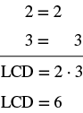 হরগুলির মৌলিক বিশ্লেষণ: 2 সমান 2; 3 সমান 3। লঘিষ্ঠ সাধারণ হর 2 গুণ 3, অর্থাৎ 6। |
|
| লঘিষ্ঠ সাধারণ হর 6 নিয়ে সমতুল ভগ্নাংশে রূপান্তর করো। | 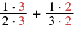 প্রথম ভগ্নাংশের লবে 1 গুণ 3 এবং হরে 2 গুণ 3; এর সঙ্গে যোগ করা হয়েছে দ্বিতীয় ভগ্নাংশ, যার লব 1 গুণ 2 এবং হর 3 গুণ 2। নতুন গুণক 3 ও 2 লাল রঙে। |
| লব ও হরের গুণগুলি হিসাব করো। | |
| যোগ করো। |
মনে রাখো, উত্তরটি আরও সরল করা যায় কি না, তা সব সময় যাচাই করবে। যেহেতু ও -এর 1 ছাড়া আর কোনো সাধারণ গুণনীয়ক নেই, তাই ভগ্নাংশটিকে আর সরল করা যায় না।
অনুশীলন · এই প্রশ্নের লিঙ্ক
বিয়োগ করো:
সমাধান
| 2 ও 4-এর ল.সা.গু. নির্ণয় করো; সেটিই লঘিষ্ঠ সাধারণ হর। 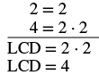 হরগুলির মৌলিক বিশ্লেষণ: 2 সমান 2 এবং 4 সমান 2 গুণ 2। লঘিষ্ঠ সাধারণ হর 2 গুণ 2, অর্থাৎ 4। |
|
| লঘিষ্ঠ সাধারণ হর 4 ব্যবহার করে সমতুল ভগ্নাংশে লেখো। | 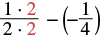 লবে 1 গুণ 2 এবং হরে 2 গুণ 2 লেখা ভগ্নাংশ থেকে বন্ধনীর মধ্যে থাকা ঋণাত্মক 1/4 বিয়োগ করা হয়েছে। প্রথম ভগ্নাংশের নতুন গুণক 2 লাল রঙে। |
| প্রথম ভগ্নাংশের লব ও হরের গুণগুলি হিসাব করো। | |
| বিয়োগ করো। | |
| সরল করো। |
একটি ভগ্নাংশের হর আগে থেকেই লঘিষ্ঠ সাধারণ হরের সমান ছিল। তাই কেবল অন্য ভগ্নাংশটিকেই রূপান্তর করতে হয়েছে।
অনুশীলন · এই প্রশ্নের লিঙ্ক
যোগ করো:
সমাধান
| 12 ও 18-এর ল.সা.গু. নির্ণয় করো; সেটিই লঘিষ্ঠ সাধারণ হর। 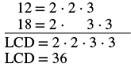 12 সমান 2 গুণ 2 গুণ 3 এবং 18 সমান 2 গুণ 3 গুণ 3। লঘিষ্ঠ সাধারণ হরে 2 দুবার এবং 3 দুবার নিয়ে গুণ করা হয়েছে; ফল 36। |
|
| লঘিষ্ঠ সাধারণ হর নিয়ে সমতুল ভগ্নাংশে লেখো। | 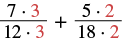 প্রথম ভগ্নাংশের লবে 7 গুণ 3 এবং হরে 12 গুণ 3। যোগ করা দ্বিতীয় ভগ্নাংশের লবে 5 গুণ 2 এবং হরে 18 গুণ 2। নতুন গুণক 3 ও 2 লাল রঙে। |
| লব ও হরের গুণগুলি হিসাব করো। | |
| যোগ করো। |
লব মৌলিক সংখ্যা, আর হর হলো হরটি লব দিয়ে নিঃশেষে বিভাজ্য নয়। তাই লব ও হরের 1 ছাড়া আর কোনো সাধারণ গুণনীয়ক নেই। উত্তরটি লঘিষ্ঠ আকারে আছে।
সমতুল ভগ্নাংশের ধর্ম ব্যবহার করার সময়, লঘিষ্ঠ সাধারণ হর পেতে কত দিয়ে গুণ করতে হবে তা দ্রুত নির্ণয় করা যায়। লঘিষ্ঠ সাধারণ হর নির্ণয়ের সময় যেভাবে লিখেছিলে, সেভাবেই হরগুলি ও লঘিষ্ঠ সাধারণ হরের মৌলিক গুণনীয়কগুলি সাজিয়ে লেখো। প্রতিটি হরের বিশ্লেষণে আরও যে গুণনীয়কগুলি দরকার, তাদের গুণফলই হবে ওই হরের জন্য প্রয়োজনীয় গুণক। একই মৌলিক গুণনীয়ক যতবার দরকার, ততবার গুনতে হবে।
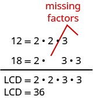
12-এর মৌলিক বিশ্লেষণে 2 দুবার ও 3 একবার; শেষের আর একটি 3-এর জায়গা ফাঁকা। 18-এর বিশ্লেষণে 2 একবার ও 3 দুবার; আর একটি 2-এর জায়গা ফাঁকা। লাল রেখা ও ইংরেজি লেখা দিয়ে আরও প্রয়োজনীয় গুণনীয়কগুলির জায়গা চিহ্নিত করা হয়েছে। নীচে লঘিষ্ঠ সাধারণ হর 2 গুণ 2 গুণ 3 গুণ 3, অর্থাৎ 36।
লঘিষ্ঠ সাধারণ হর হলো যার মৌলিক গুণনীয়কে বিশ্লেষণে বার আসে এবং বার আসে
12-এর মৌলিক গুণনীয়কে বিশ্লেষণে দুবার থাকে কিন্তু একবার থাকে । তাই 36-এর বিশ্লেষণের সঙ্গে মেলাতে আরও একবার দরকার সেজন্য -এর লব ও হরকে দিয়ে গুণ করে আমরা এমন সমতুল ভগ্নাংশ পেয়েছি, যার হর
36-এর বিশ্লেষণের সঙ্গে মেলাতে 18-এর বিশ্লেষণে আরও একটি দরকার। তাই -এর লব ও হরকে দিয়ে গুণ করলে পাই সমতুল ভগ্নাংশ, যার হর পরের উদাহরণে ভগ্নাংশ বিয়োগ করার সময় এই পদ্ধতি ব্যবহার করব।
অনুশীলন · এই প্রশ্নের লিঙ্ক
বিয়োগ করো:
সমাধান
| লঘিষ্ঠ সাধারণ হর নির্ণয় করো। 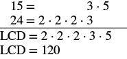 15 সমান 3 গুণ 5 এবং 24 সমান 2 গুণ 2 গুণ 2 গুণ 3। লঘিষ্ঠ সাধারণ হর 2 গুণ 2 গুণ 2 গুণ 3 গুণ 5, অর্থাৎ 120। 120-এর মৌলিক বিশ্লেষণের সঙ্গে মেলাতে 15-এর বিশ্লেষণে আরও তিনটি 2 দরকার। 24-এর বিশ্লেষণে আরও একটি 5 দরকার। |
|
| লঘিষ্ঠ সাধারণ হর নিয়ে সমতুল ভগ্নাংশে লেখো। | 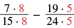 লবে 7 গুণ 8 ও হরে 15 গুণ 8 লেখা ভগ্নাংশ থেকে লবে 19 গুণ 5 ও হরে 24 গুণ 5 লেখা ভগ্নাংশ বিয়োগ করা হয়েছে। হর 120 করতে নতুন গুণক 8 ও 5 ব্যবহার করা হয়েছে; সেগুলি লাল রঙে। এখানে ওই গুণকগুলি বাদ দেওয়া হচ্ছে না। |
| প্রতিটি লব ও হরের গুণগুলি হিসাব করো। | |
| বিয়োগ করো। | |
| লব ও হরের সাধারণ গুণনীয়ক 3 আলাদা করে দেখাও। | |
| লব ও হরকে একই সাধারণ গুণনীয়ক দিয়ে ভাগ করে সরল করো। |
অনুশীলন · এই প্রশ্নের লিঙ্ক
যোগ করো:
সমাধান
| লঘিষ্ঠ সাধারণ হর নির্ণয় করো। 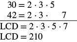 30 সমান 2 গুণ 3 গুণ 5 এবং 42 সমান 2 গুণ 3 গুণ 7। লঘিষ্ঠ সাধারণ হর 2 গুণ 3 গুণ 5 গুণ 7, অর্থাৎ 210। |
|
| লঘিষ্ঠ সাধারণ হর নিয়ে সমতুল ভগ্নাংশে লেখো। | 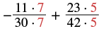 প্রথম ভগ্নাংশের লবে 11 গুণ 7 ও হরে 30 গুণ 7; পুরো ভগ্নাংশের আগে ঋণাত্মক চিহ্ন। এর সঙ্গে যোগ করা দ্বিতীয় ভগ্নাংশের লবে 23 গুণ 5 ও হরে 42 গুণ 5। নতুন গুণক 7 ও 5 লাল রঙে। |
| প্রতিটি লব ও হরের গুণগুলি হিসাব করো। | |
| যোগ করো। | |
| লব ও হরের সাধারণ গুণনীয়ক 2 আলাদা করে দেখাও। | |
| লব ও হরকে একই সাধারণ গুণনীয়ক দিয়ে ভাগ করে সরল করো। |
পরের উদাহরণে একটি ভগ্নাংশের লবে চল আছে। দুটি লবেই শুধু সংখ্যা থাকলে যে ধাপগুলি অনুসরণ করি, এখানেও সেই একই ধাপ অনুসরণ করব।
অনুশীলন · এই প্রশ্নের লিঙ্ক
যোগ করো:
সমাধান
ভগ্নাংশ দুটির হর আলাদা।
| লঘিষ্ঠ সাধারণ হর নির্ণয় করো। 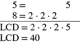 5 সমান 5 এবং 8 সমান 2 গুণ 2 গুণ 2। লঘিষ্ঠ সাধারণ হর 2 গুণ 2 গুণ 2 গুণ 5, অর্থাৎ 40। |
|
| লঘিষ্ঠ সাধারণ হর নিয়ে সমতুল ভগ্নাংশে লেখো। | 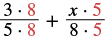 প্রথম ভগ্নাংশের লবে 3 গুণ 8 এবং হরে 5 গুণ 8; এর সঙ্গে যোগ করা দ্বিতীয় ভগ্নাংশের লবে x গুণ 5 এবং হরে 8 গুণ 5। নতুন গুণক 8 ও 5 লাল রঙে। |
| লব ও হরের গুণগুলি হিসাব করো। | |
| যোগ করো। |
লবের পদ ও সদৃশ নয়, তাই যোগ করে একটি পদে লেখা যায় না। এখানে লব ও হরে এমন কোনো সাধারণ গুণনীয়কও নেই যা বাদ দিয়ে আরও সরল করা যায়। তাই রাশিটি এই আকারেই থাকে।